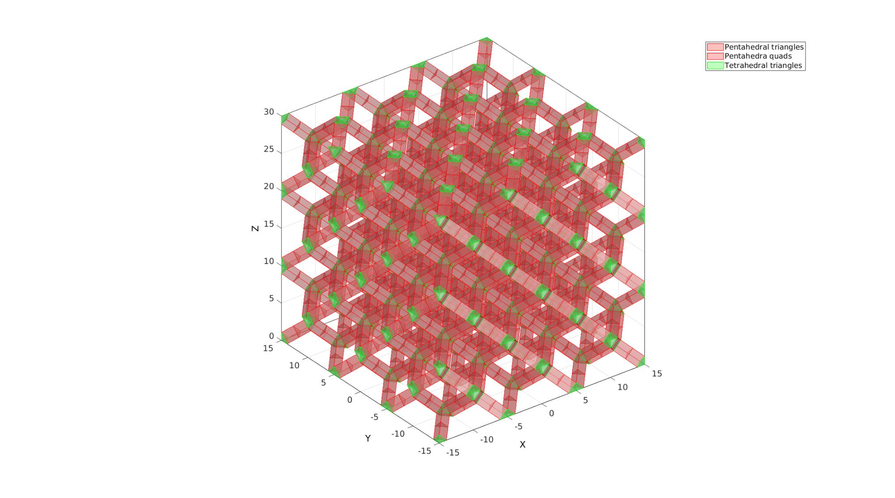
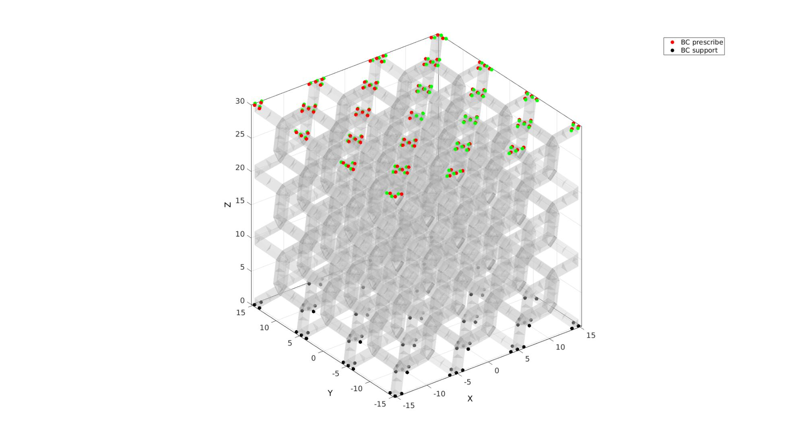
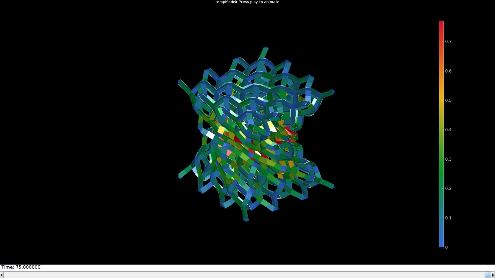

DEMO_febio_0064_diamond_lattice_twist_01
Below is a demonstration for:
- Building the geometry for the diaomond lattice with pentahedral and tetrahedral elements
- Defining the boundary conditions
- Coding the febio structure
- Running the model
- Importing and visualizing the displacement and stress results
Contents
Keywords
- febio_spec version 2.5
- febio, FEBio
- compression, tension, compressive, tensile
- displacement control, displacement boundary condition
- pentahedral penta6
- tetrahedral tet4
- cube, box, rectangular
- Lattice
- static, solid
- hyperelastic, Ogden
- displacement logfile
- stress logfile
clear; close all; clc;
Plot settings
fontSize=15; faceAlpha1=0.8; faceAlpha2=1; edgeColor=0.25*ones(1,3); edgeWidth=1.5; markerSize=25; markerSize2=10; cMap=gjet(4);
Control parameters
% Path names defaultFolder = fileparts(fileparts(mfilename('fullpath'))); savePath=fullfile(defaultFolder,'data','temp'); % Defining file names febioFebFileNamePart='tempModel'; febioFebFileName=fullfile(savePath,[febioFebFileNamePart,'.feb']); %FEB file name febioLogFileName=fullfile(savePath,[febioFebFileNamePart,'.txt']); %FEBio log file name febioLogFileName_disp=[febioFebFileNamePart,'_disp_out.txt']; %Log file name for exporting displacement febioLogFileName_force=[febioFebFileNamePart,'_force_out.txt']; %Log file name for exporting force febioLogFileName_strainEnergy=[febioFebFileNamePart,'_energy_out.txt']; %Log file name for exporting strain energy density %Latticeparameters nRepeat=3; %Number of repetitions of the lattice pattern sampleSize=30; nSubPenta=1; strutThickness=1.5; %Set the strut thickness alphaRotTotal=(90/180)*pi; numSteps=75; %Number of steps %Define applied displacement appliedStrain=0.3; %Linear strain (Only used to compute applied stretch) loadingOption=1; % 1=compression, 2=tension switch loadingOption case 1 %compression stretchLoad=1-appliedStrain; %The applied stretch for uniaxial loading case 2 % tension stretchLoad=1+appliedStrain; %The applied stretch for uniaxial loading end displacementMagnitude=(stretchLoad*sampleSize)-sampleSize; %The displacement magnitude %Material parameter set c1=1; %Shear-modulus-like parameter m1=2; %m=2 -> Neo-Hookean k=50*c1; % FEA control settings numTimeSteps=1; %Number of time steps desired max_refs=25; %Max reforms max_ups=0; %Set to zero to use full-Newton iterations opt_iter=10; %Optimum number of iterations max_retries=10; %Maximum number of retires dtmin=(1/numTimeSteps)/100; %Minimum time step size dtmax=1/numTimeSteps; %Maximum time step size min_residual=1e-20; symmetric_stiffness=0; runMode='external'; %'internal' or 'external'
Create diamond lattice
[Ep,Et,VT,Ct]=diamondLattice(sampleSize,nRepeat,strutThickness,0); [Ep,VT]=subPenta(Ep,VT,nSubPenta,3); %Sub-divide pentahedra % strutThicknessCheck=mean(patchEdgeLengths(Fp{1},VT)); VT(:,1)=VT(:,1)-sampleSize/2; VT(:,2)=VT(:,2)-sampleSize/2; %Get element faces for visualization Fp=element2patch(Ep,[],'penta6'); Ft=element2patch(Et,[],'tet4');
cFigure; hold on; hpl=gpatch(Fp,VT,'rw','r',0.5); hpl(end+1)=gpatch(Ft,VT,'gw','g',0.5); legend(hpl,{'Pentahedral triangles','Pentahedra quads','Tetrahedral triangles'}); axisGeom; camlight headlight; drawnow;
%Rotational settings alphaRotStep=alphaRotTotal/numSteps; %The angular increment for each step R=euler2DCM([0 0 alphaRotStep]); %The rotation tensor for each step VT2=VT*R; %Rotated 1 part for visualization of stepwise amount
DEFINE BC's
Z=VT(:,3); logicTop=Z>=(max(Z(:))-eps(max(Z(:)))); logicBottom=Z<min(Z(:))+eps(min(Z(:))); bcPrescribeList=find(logicTop); bcSupportList=find(logicBottom);
cFigure; hold on; gpatch(Fp,VT,'w','none',0.25); gpatch(Ft,VT,'w','none',0.25); hl2(1)=plotV(VT(bcPrescribeList,:),'r.','MarkerSize',markerSize); hl2(2)=plotV(VT(bcSupportList,:),'k.','MarkerSize',markerSize); plotV(VT2(bcPrescribeList,:),'g.','MarkerSize',markerSize); legend(hl2,{'BC prescribe','BC support'}); axisGeom; camlight headlight; drawnow;
Defining the FEBio input structure
See also febioStructTemplate and febioStruct2xml and the FEBio user manual.
%Get a template with default settings [febio_spec]=febioStructTemplate; %febio_spec version febio_spec.ATTR.version='2.5'; %Module section febio_spec.Module.ATTR.type='solid'; %Create control structure for use by all steps stepStruct.Control.analysis.ATTR.type='static'; stepStruct.Control.time_steps=numTimeSteps; stepStruct.Control.step_size=1/numTimeSteps; stepStruct.Control.time_stepper.dtmin=dtmin; stepStruct.Control.time_stepper.dtmax=dtmax; stepStruct.Control.time_stepper.max_retries=max_retries; stepStruct.Control.time_stepper.opt_iter=opt_iter; stepStruct.Control.max_refs=max_refs; stepStruct.Control.max_ups=max_ups; stepStruct.Control.symmetric_stiffness=symmetric_stiffness; stepStruct.Control.min_residual=min_residual; %Add template based default settings to proposed control section [stepStruct.Control]=structComplete(stepStruct.Control,febio_spec.Control,1); %Complement provided with default if missing %Remove control field (part of template) since step specific control sections are used febio_spec=rmfield(febio_spec,'Control'); %Material section febio_spec.Material.material{1}.ATTR.type='Ogden'; febio_spec.Material.material{1}.ATTR.id=1; febio_spec.Material.material{1}.c1=c1; febio_spec.Material.material{1}.m1=m1; febio_spec.Material.material{1}.k=k; %Geometry section % -> Nodes febio_spec.Geometry.Nodes{1}.ATTR.name='nodeSet_all'; %The node set name febio_spec.Geometry.Nodes{1}.node.ATTR.id=(1:size(VT,1))'; %The node id's febio_spec.Geometry.Nodes{1}.node.VAL=VT; %The nodel coordinates % -> Elements febio_spec.Geometry.Elements{1}.ATTR.type='penta6'; %Element type of this set febio_spec.Geometry.Elements{1}.ATTR.mat=1; %material index for this set febio_spec.Geometry.Elements{1}.ATTR.name='Pentahedra'; %Name of the element set febio_spec.Geometry.Elements{1}.elem.ATTR.id=(1:1:size(Ep,1))'; %Element id's febio_spec.Geometry.Elements{1}.elem.VAL=Ep; febio_spec.Geometry.Elements{2}.ATTR.type='tet4'; %Element type of this set febio_spec.Geometry.Elements{2}.ATTR.mat=1; %material index for this set febio_spec.Geometry.Elements{2}.ATTR.name='Tetrahedra'; %Name of the element set febio_spec.Geometry.Elements{2}.elem.ATTR.id=size(Ep,1)+(1:1:size(Et,1))'; %Element id's febio_spec.Geometry.Elements{2}.elem.VAL=Et; % -> NodeSets febio_spec.Geometry.NodeSet{1}.ATTR.name='bcSupportList'; febio_spec.Geometry.NodeSet{1}.node.ATTR.id=bcSupportList(:); febio_spec.Geometry.NodeSet{2}.ATTR.name='bcPrescribeList'; febio_spec.Geometry.NodeSet{2}.node.ATTR.id=bcPrescribeList(:); %Create steps V2=VT; %Coordinate set nodeSetName=febio_spec.Geometry.NodeSet{2}.ATTR.name; febio_spec.MeshData.NodeData=[];%Initialize so we can use end+1 indexing bcNames={'x','y','z'}; for q=1:1:numSteps %Step specific control section febio_spec.Step{q}.ATTR.id=q; febio_spec.Step{q}.Control=stepStruct.Control; %Rotate coordinates V2n=V2; %The current set V2=V2*R; %Rotated further %Define prescribed displacements bcPrescribeMagnitudesStep=V2(bcPrescribeList,:)-V2n(bcPrescribeList,:); %Define mesh data and prescribed displacements for q_dir=1:1:3 %Loop over coordinates dimensions %Define mesh data for displacement increments c=numel(febio_spec.MeshData.NodeData)+1; %Current step index febio_spec.MeshData.NodeData{c}.ATTR.name=['displacement_',bcNames{q_dir},'_step_',num2str(q)]; febio_spec.MeshData.NodeData{c}.ATTR.node_set=nodeSetName; febio_spec.MeshData.NodeData{c}.node.ATTR.lid=(1:1:numel(bcPrescribeList))'; febio_spec.MeshData.NodeData{c}.node.VAL=bcPrescribeMagnitudesStep(:,q_dir); %Define prescribed displacements febio_spec.Step{q}.Boundary.prescribe{q_dir}.ATTR.bc=bcNames{q_dir}; febio_spec.Step{q}.Boundary.prescribe{q_dir}.ATTR.relative=1; febio_spec.Step{q}.Boundary.prescribe{q_dir}.ATTR.node_set=nodeSetName; febio_spec.Step{q}.Boundary.prescribe{q_dir}.scale.ATTR.lc=1; febio_spec.Step{q}.Boundary.prescribe{q_dir}.scale.VAL=1; febio_spec.Step{q}.Boundary.prescribe{q_dir}.relative=1; febio_spec.Step{q}.Boundary.prescribe{q_dir}.value.ATTR.node_data=febio_spec.MeshData.NodeData{c}.ATTR.name; end end %Boundary condition section % -> Fix boundary conditions febio_spec.Boundary.fix{1}.ATTR.bc='x'; febio_spec.Boundary.fix{1}.ATTR.node_set=febio_spec.Geometry.NodeSet{1}.ATTR.name; febio_spec.Boundary.fix{2}.ATTR.bc='y'; febio_spec.Boundary.fix{2}.ATTR.node_set=febio_spec.Geometry.NodeSet{1}.ATTR.name; febio_spec.Boundary.fix{3}.ATTR.bc='z'; febio_spec.Boundary.fix{3}.ATTR.node_set=febio_spec.Geometry.NodeSet{1}.ATTR.name; febio_spec.Boundary.fix{4}.ATTR.bc='x'; febio_spec.Boundary.fix{4}.ATTR.node_set=febio_spec.Geometry.NodeSet{2}.ATTR.name; febio_spec.Boundary.fix{5}.ATTR.bc='y'; febio_spec.Boundary.fix{5}.ATTR.node_set=febio_spec.Geometry.NodeSet{2}.ATTR.name; %Output section % -> log file febio_spec.Output.logfile.ATTR.file=febioLogFileName; febio_spec.Output.logfile.node_data{1}.ATTR.file=febioLogFileName_disp; febio_spec.Output.logfile.node_data{1}.ATTR.data='ux;uy;uz'; febio_spec.Output.logfile.node_data{1}.ATTR.delim=','; febio_spec.Output.logfile.node_data{1}.VAL=1:size(VT,1); febio_spec.Output.logfile.node_data{2}.ATTR.file=febioLogFileName_force; febio_spec.Output.logfile.node_data{2}.ATTR.data='Rx;Ry;Rz'; febio_spec.Output.logfile.node_data{2}.ATTR.delim=','; febio_spec.Output.logfile.node_data{2}.VAL=1:size(VT,1); febio_spec.Output.logfile.element_data{1}.ATTR.file=febioLogFileName_strainEnergy; febio_spec.Output.logfile.element_data{1}.ATTR.data='sed'; febio_spec.Output.logfile.element_data{1}.ATTR.delim=','; febio_spec.Output.logfile.element_data{1}.VAL=1:1:size(Ep,1)+size(Et,1);
Quick viewing of the FEBio input file structure
The febView function can be used to view the xml structure in a MATLAB figure window.
febView(febio_spec); %Viewing the febio file
Exporting the FEBio input file
Exporting the febio_spec structure to an FEBio input file is done using the febioStruct2xml function.
febioStruct2xml(febio_spec,febioFebFileName); %Exporting to file and domNode
Running the FEBio analysis
To run the analysis defined by the created FEBio input file the runMonitorFEBio function is used. The input for this function is a structure defining job settings e.g. the FEBio input file name. The optional output runFlag informs the user if the analysis was run succesfully.
febioAnalysis.run_filename=febioFebFileName; %The input file name febioAnalysis.run_logname=febioLogFileName; %The name for the log file febioAnalysis.disp_on=1; %Display information on the command window febioAnalysis.disp_log_on=1; %Display convergence information in the command window febioAnalysis.runMode=runMode; %Run in external or in matlab terminal febioAnalysis.t_check=0.25; %Time for checking log file (dont set too small) febioAnalysis.maxtpi=1e99; %Max analysis time febioAnalysis.maxLogCheckTime=10; %Max log file checking time [runFlag]=runMonitorFEBio(febioAnalysis);%START FEBio NOW!!!!!!!!
%%%%%%%%%%%%%%%%%%%%%%%%%%%%%%%%%%%%%%%%%%%%% --- STARTING FEBIO JOB --- 10-Aug-2020 10:53:26 Waiting for log file... Proceeding to check log file...10-Aug-2020 10:53:27 ------- converged at time : 1 ------- converged at time : 2 ------- converged at time : 3 ------- converged at time : 4 ------- converged at time : 5 ------- converged at time : 6 ------- converged at time : 7 ------- converged at time : 8 ------- converged at time : 9 ------- converged at time : 10 ------- converged at time : 11 ------- converged at time : 12 ------- converged at time : 13 ------- converged at time : 14 ------- converged at time : 15 ------- converged at time : 16 ------- converged at time : 17 ------- converged at time : 18 ------- converged at time : 19 ------- converged at time : 20 ------- converged at time : 21 ------- converged at time : 22 ------- converged at time : 23 ------- converged at time : 24 ------- converged at time : 25 ------- converged at time : 26 ------- converged at time : 27 ------- converged at time : 28 ------- converged at time : 29 ------- converged at time : 30 ------- converged at time : 31 ------- converged at time : 32 ------- converged at time : 33 ------- converged at time : 34 ------- converged at time : 35 ------- converged at time : 36 ------- converged at time : 37 ------- converged at time : 38 ------- converged at time : 39 ------- converged at time : 40 ------- converged at time : 41 ------- converged at time : 42 ------- converged at time : 43 ------- converged at time : 44 ------- converged at time : 45 ------- converged at time : 46 ------- converged at time : 47 ------- converged at time : 48 ------- converged at time : 49 ------- converged at time : 50 ------- converged at time : 51 ------- converged at time : 52 ------- converged at time : 53 ------- converged at time : 54 ------- converged at time : 55 ------- converged at time : 56 ------- converged at time : 57 ------- converged at time : 58 ------- converged at time : 59 ------- converged at time : 60 ------- converged at time : 61 ------- converged at time : 62 ------- converged at time : 63 ------- converged at time : 64 ------- converged at time : 65 ------- converged at time : 66 ------- converged at time : 67 ------- converged at time : 68 ------- converged at time : 69 ------- converged at time : 70 ------- converged at time : 71 ------- converged at time : 72 ------- converged at time : 73 ------- converged at time : 74 ------- converged at time : 75 --- Done --- 10-Aug-2020 10:53:57
Import FEBio results
if runFlag==1 %i.e. a succesful run
% Importing nodal displacements from a log file [time_mat, N_disp_mat,~]=importFEBio_logfile(fullfile(savePath,febioLogFileName_disp)); %Nodal displacements time_mat=[0; time_mat(:)]; %Time N_disp_mat=N_disp_mat(:,2:end,:); sizImport=size(N_disp_mat); sizImport(3)=sizImport(3)+1; N_disp_mat_n=zeros(sizImport); N_disp_mat_n(:,:,2:end)=N_disp_mat; N_disp_mat=N_disp_mat_n; DN=N_disp_mat(:,:,end); DN_magnitude=sqrt(sum(DN(:,3).^2,2)); V_DEF=N_disp_mat+repmat(VT,[1 1 size(N_disp_mat,3)]);
Importing element strain energies from a log file
[~,E_energy,~]=importFEBio_logfile(fullfile(savePath,febioLogFileName_strainEnergy)); %Element strain energy %Remove nodal index column E_energy=E_energy(:,2:end,:); %Add initial state i.e. zero energy sizImport=size(E_energy); sizImport(3)=sizImport(3)+1; E_energy_mat_n=zeros(sizImport); E_energy_mat_n(:,:,2:end)=E_energy; E_energy=E_energy_mat_n; Ep_energy=E_energy(1:1:size(Ep,1),:,:); Et_energy=E_energy(size(Ep,1)+1:end,:,:);
Plotting the simulated results using anim8 to visualize and animate deformations
[~,CFp_energy]=element2patch(Ep,Ep_energy(:,:,end),'penta6'); [~,CFt_energy]=element2patch(Et,Et_energy(:,:,end),'tet4'); axLim=[min(min(V_DEF,[],3),[],1); max(max(V_DEF,[],3),[],1)]; figStruct.ColorDef='black'; %Setting colordefinitions to black figStruct.Color='k'; % Create basic view and store graphics handle to initiate animation hf=cFigure(figStruct); %Open figure gtitle([febioFebFileNamePart,': Press play to animate']); hp1=gpatch(Ft,V_DEF(:,:,end),CFt_energy,'none',1); hp2=gpatch(Fp{1},V_DEF(:,:,end),CFp_energy{1},'none',1); hp3=gpatch(Fp{2},V_DEF(:,:,end),CFp_energy{2},'none',1); axisGeom(gca,fontSize); colormap(gjet(250)); colorbar; caxis([0 max(E_energy(:))/2]); axis(axLim(:)'); %Set axis limits statically camlight headlight; axis off; % Set up animation features animStruct.Time=time_mat; %The time vector for qt=1:1:size(N_disp_mat,3) %Loop over time increments VT_def=VT+N_disp_mat(:,:,qt); %Current nodal coordinates [~,CFp_energy]=element2patch(Ep,Ep_energy(:,:,qt),'penta6'); [~,CFt_energy]=element2patch(Et,Et_energy(:,:,qt),'tet4'); %Set entries in animation structure animStruct.Handles{qt}=[hp1 hp1 hp2 hp2 hp3 hp3]; %Handles of objects to animate animStruct.Props{qt}={'Vertices','CData','Vertices','CData','Vertices','CData'}; %Properties of objects to animate animStruct.Set{qt}={VT_def,CFt_energy,VT_def,CFp_energy{1},VT_def,CFp_energy{2}}; %Property values for to set in order to animate end anim8(hf,animStruct); %Initiate animation feature gdrawnow;
end

GIBBON www.gibboncode.org
Kevin Mattheus Moerman, gibbon.toolbox@gmail.com
GIBBON footer text
License: https://github.com/gibbonCode/GIBBON/blob/master/LICENSE
GIBBON: The Geometry and Image-based Bioengineering add-On. A toolbox for image segmentation, image-based modeling, meshing, and finite element analysis.
Copyright (C) 2006-2020 Kevin Mattheus Moerman
This program is free software: you can redistribute it and/or modify it under the terms of the GNU General Public License as published by the Free Software Foundation, either version 3 of the License, or (at your option) any later version.
This program is distributed in the hope that it will be useful, but WITHOUT ANY WARRANTY; without even the implied warranty of MERCHANTABILITY or FITNESS FOR A PARTICULAR PURPOSE. See the GNU General Public License for more details.
You should have received a copy of the GNU General Public License along with this program. If not, see http://www.gnu.org/licenses/.